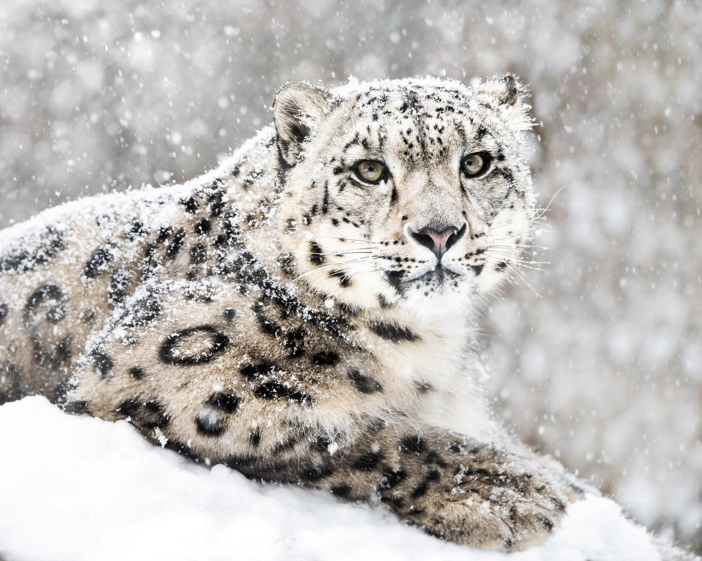
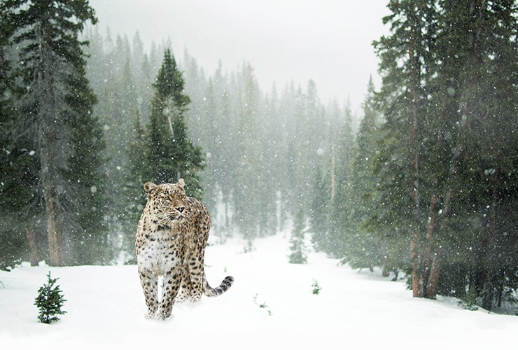
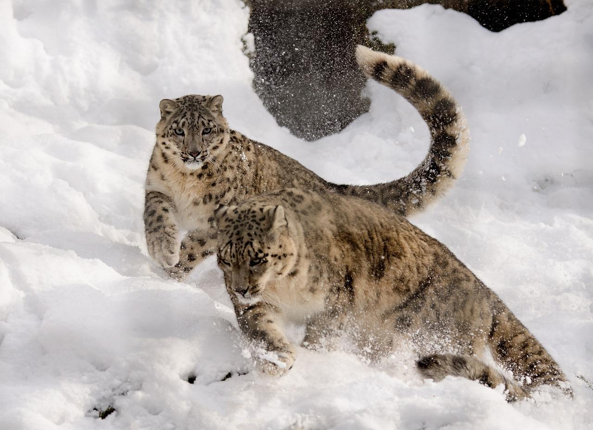

El **Leopardo de las Nieves** (*Panthera uncia*) es un gran felino nativo de las regiones montañosas de Asia Central. Es famoso por su pelaje grueso, hermoso y de color gris ahumado con rosetas oscuras, lo que le permite camuflarse perfectamente en su hábitat alpino y subalpino. También se distingue por su larga y gruesa cola, que utiliza para mantener el equilibrio y como abrigo. Actualmente está clasificado como **Vulnerable**. Sus principales amenazas son la caza furtiva por su piel y huesos, y la pérdida de sus presas naturales. El cambio climático también amenaza con reducir su frágil hábitat de alta montaña. Se le conoce a menudo como el "fantasma de las montañas" debido a su naturaleza esquiva y su excelente camuflaje.


